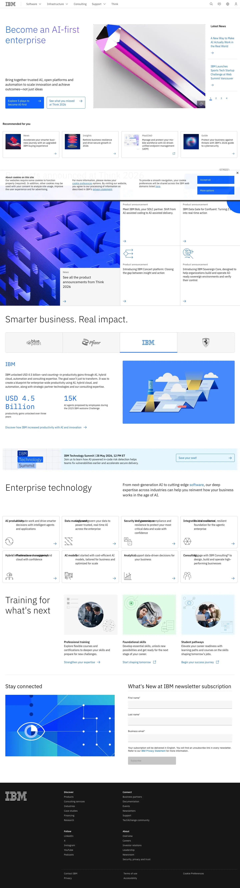

IBM 主题
IBM 的 Design.md 主题展示，围绕媒体内容、B2B 产品、企业服务、SaaS 产品组织页面。
Enterprise technology. Carbon design system, structured blue palette.
媒体内容B2B 产品企业服务SaaS 产品开发工具浅色界面效率工具专业工具

来源
- 来源
- getdesign.md
- 镜像
- github:VoltAgent/awesome-design-md
- 网站
- https://ibm.com/
- 详情
- https://getdesign.md/ibm/design-md
色板
#0f62fe: #0f62fe#161616: #161616#ffffff: #ffffff#525252: #525252#8c8c8c: #8c8c8c#f4f4f4: #f4f4f4#e0e0e0: #e0e0e0#262626: #262626#c6c6c6: #c6c6c6#0043ce: #0043ce#002d9c: #002d9c#0050e6: #0050e6
字体
display: IBM Plex Sansbody: IBM Plex Sansmono: ui-monospacehints: IBM Plex Sans,ui-monospace,Inter
圆角
control: 0pxcard: 0pxpreview: 0pxpill: 9999pxsource: design-md
间距
xxs: 4pxxs: 8pxsm: 12pxmd: 16pxlg: 24pxxl: 32pxxxl: 48pxsection: 96pxsource: design-md
使用建议
建议
- 建议：Use {rounded.none} 0px on every CTA, card, input, and container. The flat-square aesthetic is the brand。
- 建议：Pair Plex Sans weight 300 for display sizes (42px+) with weight 400 for body. Resist the urge to bold the headline。
- 建议：Reserve {colors.primary} IBM Blue for primary CTAs, links, focused-input underlines, and CTA banner. Do not use it as a card background or eyebrow color。
- 建议：Apply {letter-spacing: 0.16px} to body sizes. It's a Carbon precision detail and part of the typographic voice。
- 建议：Use surface change ({canvas} → {surface-1}) and 1px hairlines for card hierarchy. Skip drop shadows。
避免
- 避免：round corners on buttons, cards, or inputs. Even 4px rounded corners break the Carbon look。
- 避免：bold display headlines. Plex Sans at weight 300 is the brand voice; weight 700 makes it look generic。
- 避免：add atmospheric depth (gradient backdrops, drop shadows, atmospheric overlays) outside the documented soft-blue hero gradient。
- 避免：introduce a second brand color. IBM Blue is the only chromatic accent; status semantics use the documented green / yellow / red。
- 避免：replace IBM Plex Sans with Inter or Helvetica without preserving the {letter-spacing: 0.16px} and weight-300 display treatment。
查看 DESIGN.md